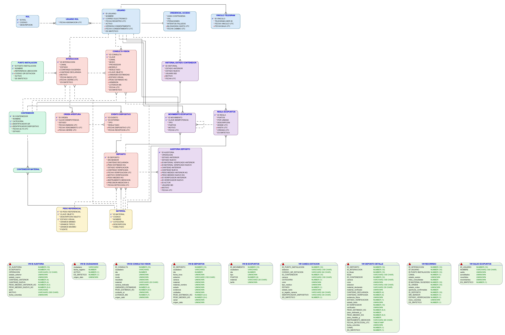
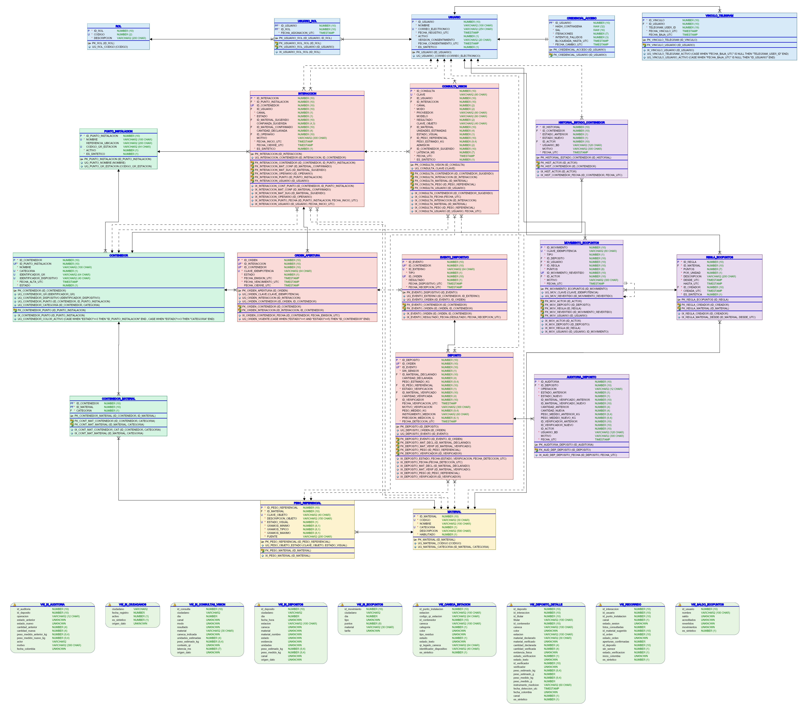
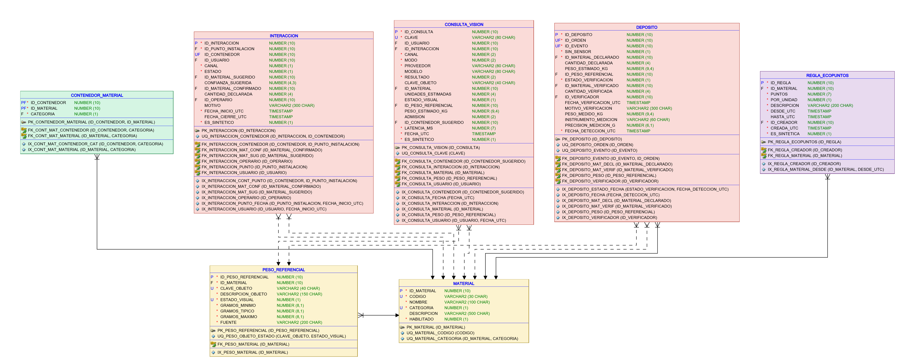
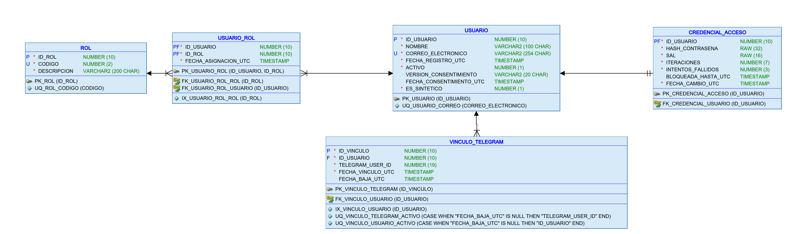
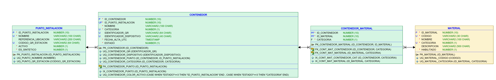
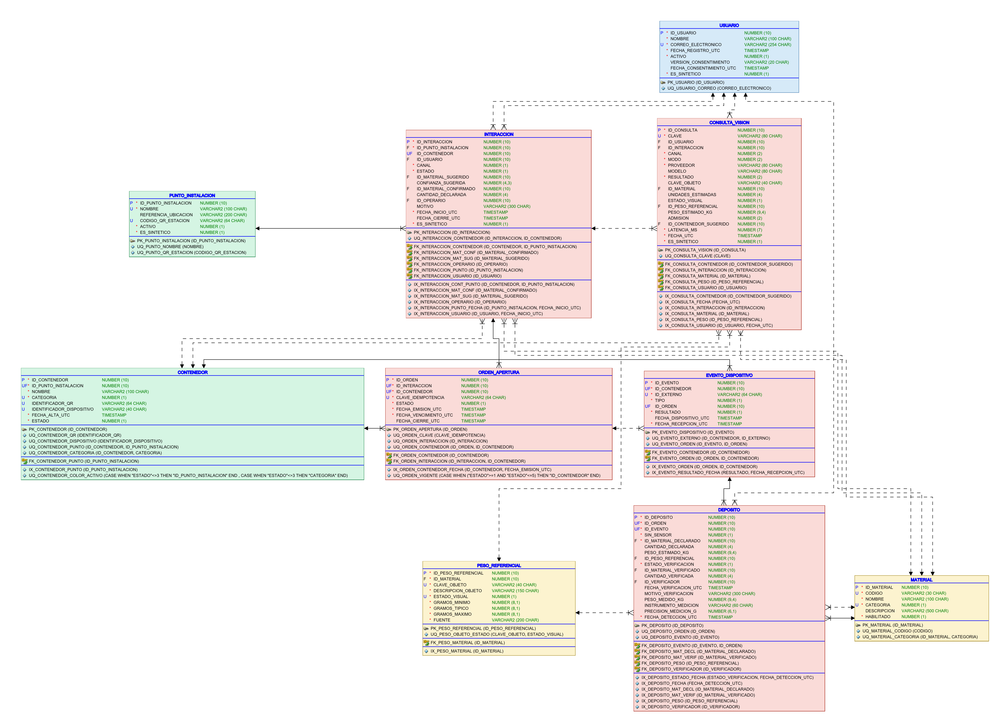
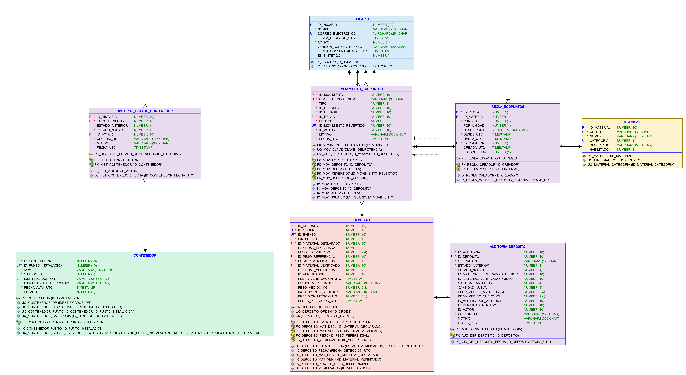

Figura 9. Data Modeler — modelo lógico
El modelo lógico del diseño EcoAccess_BD.dmd, exportado desde Oracle SQL Developer Data Modeler, ordenado por módulos.
Cómo leerlo: Notación de Data Modeler (Barker): # identificador, * obligatorio, U único; las patas de gallo marcan el lado «muchos».
PDF A0 horizontal · PNG · PDF original de Data Modeler

Figura 10. Data Modeler — modelo relacional general (Relational_1)
El modelo relacional Relational_1 completo: 19 tablas y 38 FK, con PK, UK, FK e índices tal como los muestra Data Modeler.
Cómo leerlo: P = clave primaria, F = clave foránea, U = única; la flecha apunta a la tabla padre. Línea continua: FK obligatoria; discontinua: FK opcional.
PDF A0 horizontal · PNG · PDF original de Data Modeler

Figura 11. Data Modeler — subvista M1 (Catálogos y pesos referenciales)
Subvista M1 del modelo relacional en Data Modeler: 2 tablas (MATERIAL, PESO_REFERENCIAL), 15 columnas, 1 FK internas y 0 FK hacia otros módulos. Como contexto, la subvista puede mostrar también las tablas de otros módulos que se relacionan con ellas.
Cómo leerlo: Misma notación que el modelo relacional general de Data Modeler.
PDF A1 horizontal · PNG · PDF original de Data Modeler

Figura 12. Data Modeler — subvista M2 (Usuarios e identidad)
Subvista M2 del modelo relacional en Data Modeler: 5 tablas (ROL, USUARIO, USUARIO_ROL, CREDENCIAL_ACCESO, VINCULO_TELEGRAM), 26 columnas, 4 FK internas y 0 FK hacia otros módulos. Como contexto, la subvista puede mostrar también las tablas de otros módulos que se relacionan con ellas.
Cómo leerlo: Misma notación que el modelo relacional general de Data Modeler.
PDF A2 horizontal · PNG · PDF original de Data Modeler

Figura 13. Data Modeler — subvista M3 (Infraestructura y códigos QR)
Subvista M3 del modelo relacional en Data Modeler: 3 tablas (PUNTO_INSTALACION, CONTENEDOR, CONTENEDOR_MATERIAL), 17 columnas, 2 FK internas y 1 FK hacia otros módulos. Como contexto, la subvista puede mostrar también las tablas de otros módulos que se relacionan con ellas.
Cómo leerlo: Misma notación que el modelo relacional general de Data Modeler.
PDF A1 horizontal · PNG · PDF original de Data Modeler

Figura 14. Data Modeler — subvista M4 (Interacciones, consultas visuales, órdenes, eventos y depósitos)
Subvista M4 del modelo relacional en Data Modeler: 5 tablas (INTERACCION, CONSULTA_VISION, ORDEN_APERTURA, EVENTO_DISPOSITIVO, DEPOSITO), 69 columnas, 4 FK internas y 16 FK hacia otros módulos. Como contexto, la subvista puede mostrar también las tablas de otros módulos que se relacionan con ellas.
Cómo leerlo: Misma notación que el modelo relacional general de Data Modeler.
PDF A1 horizontal · PNG · PDF original de Data Modeler

Figura 15. Data Modeler — subvista M5 (EcoPuntos y auditoría)
Subvista M5 del modelo relacional en Data Modeler: 4 tablas (REGLA_ECOPUNTOS, MOVIMIENTO_ECOPUNTOS, AUDITORIA_DEPOSITO, HISTORIAL_ESTADO_CONTENEDOR), 46 columnas, 2 FK internas y 8 FK hacia otros módulos. Como contexto, la subvista puede mostrar también las tablas de otros módulos que se relacionan con ellas.
Cómo leerlo: Misma notación que el modelo relacional general de Data Modeler.
PDF A1 horizontal · PNG · PDF original de Data Modeler